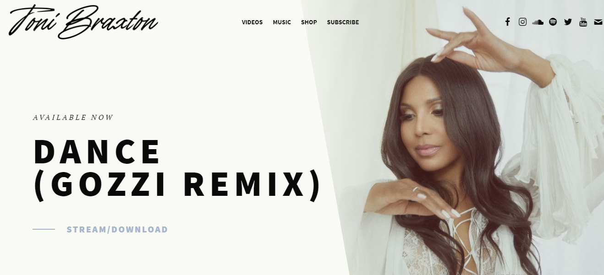

Toni Michelle Braxton é uma premiada cantora, compositora e atriz norte-americana; nasceu em 07 de Outubro de 1967 em Severn - Maryland (EUA).
Profunda e extensa voz de contralto lírico é considerada uma das melhores da música mundial. A cantora consagrou-se mundialmente na década de 1990, com suas canções que falavam principalmente do amor.
Os principais gêneros musicais dessa cantora são: R&B, POP, Soul e Hip Hop. Sendo que foram realizadas as seguintes turnês mundiais para divulgação dos seus álbuns:
Em 04 de novembro de 1997 a cantora lançou a música 'How could an angel break my heart?'. De composição própria com parceria do artista 'Babyface', esta famosa música fez muito sucesso na época!
A mesma é uma mistura dos estilos Soul e POP com duração de 04 minutos e 32 segundos, e faz parte do álbum 'Secrets' (quarto e último single do Cd).
O videoclipe é dirigido por Iain Softley, e como na canção que fala no eu-lírico sobre uma mulher negra que foi traída por seu companheiro por uma mulher branca, no vídeo o fato é mostrado o suposto companheiro a traindo com a tal outra mulher. O vídeo é mostrado provavelmente em duas épocas, uma no século XIX e outra numa época contemporânea (atualmente). O saxofonista Kenny G faz uma participação na canção com seu instrumento.
Para assistir o vídeo clique no título a seguir:
Para ver a letra original e tradução em português da música, acesse o seguinte link:
Acesse o site oficial da cantora para mais informações:
